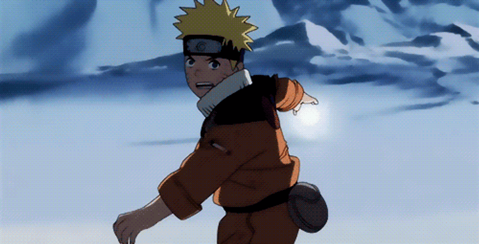
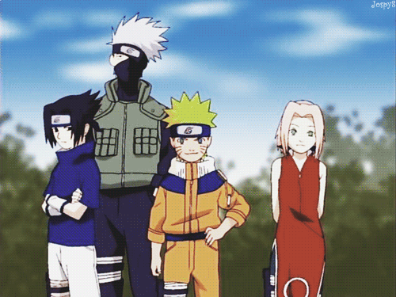
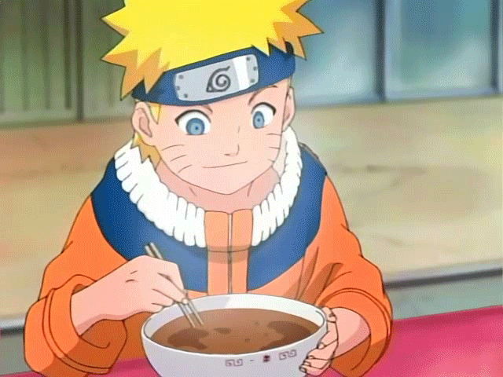

Naruto Rasengan
O Rasengan é uma das técnicas mais icônicas de Naruto, criada pelo Quarto Hokage, Minato Namikaze, que levou três anos para desenvolvê-la.
🌀 Como FuncionaEsfera de Chakra:
O usuário concentra chakra puro na palma da mão.Rotação e Compactação: O chakra gira rapidamente em múltiplas direções e é compactado em uma forma esférica perfeita.Sem Selos: Não exige selos de mão para ser ativado.Poder Destrutivo: Ao atingir o alvo, a rotação violenta do chakra tritura e repele o oponente para longe

Equipe 7
A Equipe 7 (também conhecida como Time Kakashi) é o grupo de protagonistas principal da franquia Naruto, originalmente formado sob a liderança do Jōnin Kakashi Hatake para supervisionar os três novos Genins de Konoha.👥 Membros OriginaisKakashi Hatake (Líder): Conhecido como "O Ninja Copiador", serve como o mentor experiente do grupo.Naruto Uzumaki: O protagonista focado em se tornar Hokage, que carrega a Raposa de Nove Caudas.Sasuke Uchiha: O prodígio do clã Uchiha, movido pelo desejo de vingança contra seu irmão Itachi.Sakura Haruno: A kunoichi inteligente do grupo, que mais tarde se destaca em controle de chakra e medicina.

Naruto Comendo Lamen
O Lamen do Ichiraku (ou Ramen) é a comida favorita de Naruto Uzumaki e um dos elementos mais afetivos e marcantes de todo o anime. Mais do que uma refeição, o prato simboliza acolhimento, já que o restaurante foi um dos poucos lugares onde Naruto era bem-recebido quando criança.🍜 O Prato Favorito do NarutoO pedido oficial e clássico do Naruto no Ichiraku é o Miso Chashu Ramen:Caldo: Base de Miso (pasta de soja fermentada).Massa: Macarrão do tipo lamen fresco e longo.Proteína: Fatias grossas de Chashu (barriga de porco cozida e marinada).Acompanhamentos: Narutomaki (massa de peixe com espiral rosa), broto de bambu (menma), ovo cozido marinado (ajitama), algas (nori) e cebolinha fresca.